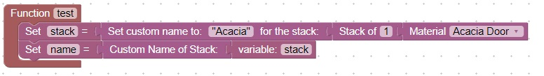
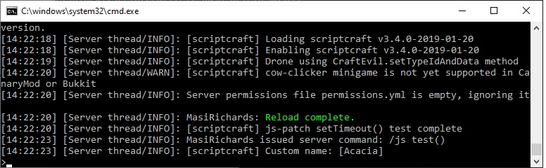

<H1>Get custom name of a stack</h1>
This code will create a stack and set the custom name of that stack<br>

<br>

It will read back the custom name. <br>
If you look in the server console area you will see the name when the test is run: <br>



